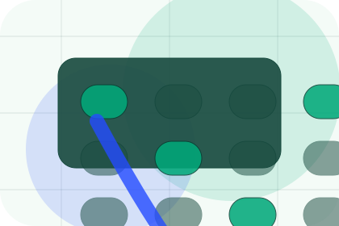
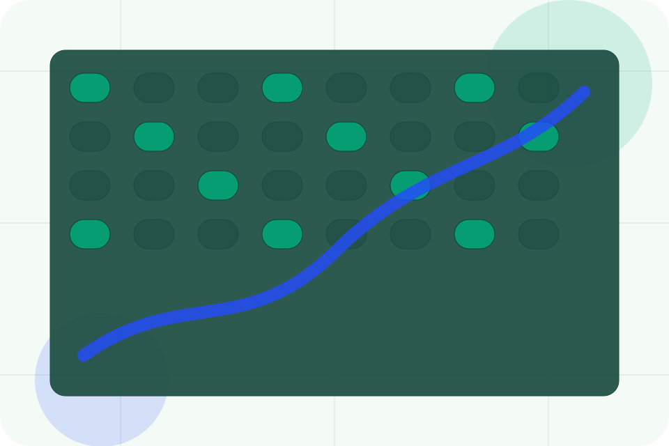
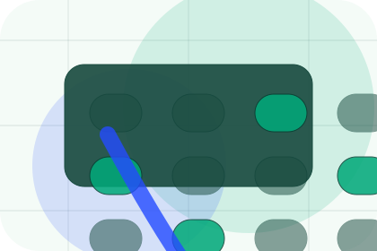
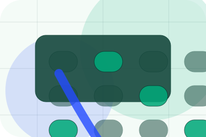
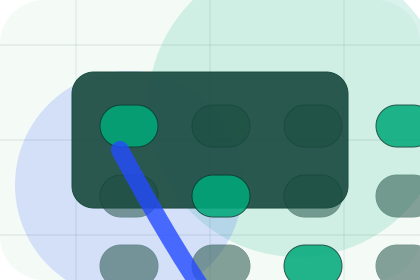
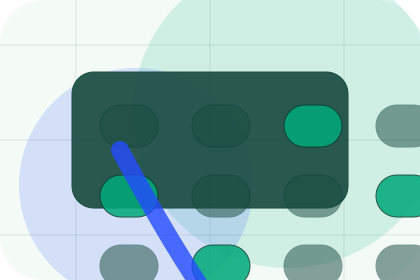
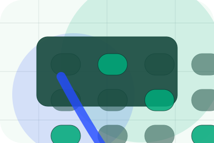
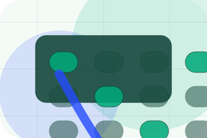
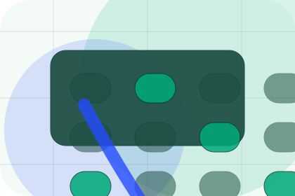
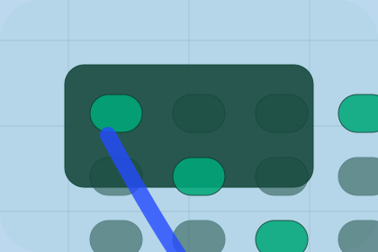

Before
The uncertainty, delay, or missed opportunity visitors bring into areas.
Impact / 01
Impact opens as a clear environmental decision hub: what Terra offers, who it helps, why it matters, and which route to take first.
The first screen combines positioning, proof, primary action, and fast internal navigation, so people can act immediately or compare the rest of the impact route with context.
Emissions dashboard hero
Select the closest route and Terra keeps the next step, proof, and follow-up expectation aligned with accountability and measurable change.

Impact / 02
Areas shows what changes after the work: clearer decisions, visible progress, and proof points that connect the offer to real outcomes.
The layout connects before-and-after thinking with measured outcomes, making the result easy to scan without promising what the business cannot guarantee.
Explore Impact
The uncertainty, delay, or missed opportunity visitors bring into areas.

The clearer, safer, or more valuable state Terra is designed to support.

The visible cue that connects areas to a believable decision, not a loose claim.
Impact / 03
Emissions shows what changes after the work: clearer decisions, visible progress, and proof points that connect the offer to real outcomes.
The layout connects before-and-after thinking with measured outcomes, making the result easy to scan without promising what the business cannot guarantee.
Explore ImpactThe uncertainty, delay, or missed opportunity visitors bring into emissions.
The clearer, safer, or more valuable state Terra is designed to support.

The visible cue that connects emissions to a believable decision, not a loose claim.
Impact / 04
Waste shows what changes after the work: clearer decisions, visible progress, and proof points that connect the offer to real outcomes.
The layout connects before-and-after thinking with measured outcomes, making the result easy to scan without promising what the business cannot guarantee.
Explore ImpactThe uncertainty, delay, or missed opportunity visitors bring into waste.
The clearer, safer, or more valuable state Terra is designed to support.
The visible cue that connects waste to a believable decision, not a loose claim.
Impact / 05
Water shows what changes after the work: clearer decisions, visible progress, and proof points that connect the offer to real outcomes.
The layout connects before-and-after thinking with measured outcomes, making the result easy to scan without promising what the business cannot guarantee.
Explore ImpactThe uncertainty, delay, or missed opportunity visitors bring into water.
The clearer, safer, or more valuable state Terra is designed to support.
The visible cue that connects water to a believable decision, not a loose claim.
Impact / 06
Biodiversity shows what changes after the work: clearer decisions, visible progress, and proof points that connect the offer to real outcomes.
The layout connects before-and-after thinking with measured outcomes, making the result easy to scan without promising what the business cannot guarantee.
Explore Impact
The uncertainty, delay, or missed opportunity visitors bring into biodiversity.

The clearer, safer, or more valuable state Terra is designed to support.

The visible cue that connects biodiversity to a believable decision, not a loose claim.
Impact / 08
Metrics shows what changes after the work: clearer decisions, visible progress, and proof points that connect the offer to real outcomes.
The layout connects before-and-after thinking with measured outcomes, making the result easy to scan without promising what the business cannot guarantee.
Explore ImpactThe uncertainty, delay, or missed opportunity visitors bring into metrics.
The clearer, safer, or more valuable state Terra is designed to support.

The visible cue that connects metrics to a believable decision, not a loose claim.
Impact / 09
Targets shows what changes after the work: clearer decisions, visible progress, and proof points that connect the offer to real outcomes.
The layout connects before-and-after thinking with measured outcomes, making the result easy to scan without promising what the business cannot guarantee.
Explore ImpactTerra structures targets around before, after, and a clear next route so visitors can compare the block quickly before they book an audit.
Book AuditImpact / 10
Terra closes the impact route with a clear action, a quick reminder of the value, and a low-friction way to book an audit.
Visitors who are ready can use the primary action. Visitors who are still comparing can scan the section links, proof, and support routes before they book an audit.
Book AuditThe final block keeps the choice simple: act now, compare one more proof route, or send enough detail for a focused response.
Book Auditaccountability and measurable change
A climate-accounting site with emissions dashboards, report proof, methodology panels, and audit CTAs. Impact ends with a direct path to book an audit, plus enough context for visitors who still need to compare.

Book AuditInformation is provided for planning and should be reviewed for the final client, location, and operating rules.